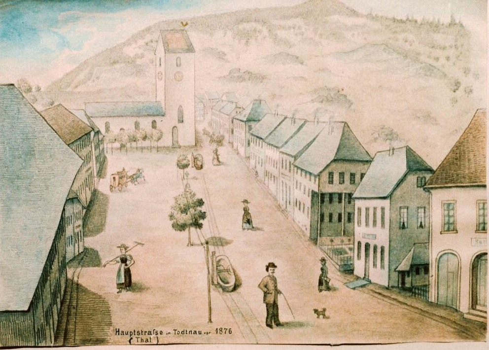

88 Häuser
Die Schwäbische Kronik vom 22. Juli 1876 berichtet von 88 Häusern, 202 Familien und etwa 1’200 obdachlosen Menschen.

Ein Feuer verändert eine Stadt. Historische Bilder, Zeitungsberichte und Archivquellen erzählen von der Katastrophe und dem Wiederaufbau.
Die Geschichte entdeckenAm 19. Juli 1876 zerstörte ein Grossbrand weite Teile Todtnaus. Die Geschichte des Ereignisses lässt sich anhand von Zeitzeugen, historischen Abbildungen und amtlichen Überlieferungen nachvollziehen.
Die Hauptstrasse, die alte eintürmige Pfarrkirche und das Stadtbild vor dem Brand.
Mehr erfahren →
Wie sich das Feuer ausbreitete und was zeitgenössische Berichte darüber festhalten.
Zum Brandverlauf →
Eine neue Stadtanlage und die neue doppeltürmige Pfarrkirche verändern Todtnau.
Weiterlesen →Bildquellen: Stadt Todtnau und Forschungsarchiv. Die Karte ist eine moderne Arbeitsrekonstruktion, keine zeitgenössische Darstellung.
Schon unmittelbar nach dem Brand berichteten Zeitungen über Zerstörung, Hilfsaktionen und die betroffenen Familien. Diese Berichte sind wertvolle Quellen – aber auch sie müssen miteinander verglichen werden.
Im Archiv befinden sich sowohl der Bericht der Schwäbischen Kronik als auch der 1877 veröffentlichte Augenzeugenbericht von Feuerwehradjutant Hanser.
Am 19. Juli 1876 zerstörte ein Grossbrand grosse Teile Todtnaus. Die Katastrophe prägte die Stadt und ihre Erinnerung über Generationen hinweg. Diese Webseite dokumentiert ergänzende Forschung, ordnet überlieferte Zahlen ein und stellt Fragen an die historischen Quellen.
Nach Hansers Bericht starb die Frau des Sonnenwirts Mayer einige Tage nach dem Brand an ihren Verletzungen. Weitere Personen wurden verletzt. Die Schadenszahlen unterscheiden sich je nach Quelle (unter anderem 88 Häuser beziehungsweise 89 Wohnhäuser und 61 Nebengebäude).
Laut Feuerwehradjutant Hanser begann der Brand am 19. Juli 1876 gegen 12 Uhr in der Zieglerischen Papierfabrik. Gegen 15 Uhr brannten grosse Teile der Stadt; gegen 17 Uhr war das Feuer unter Kontrolle.
Hanser lokalisiert den Ausbruch in den oberen Räumen der Zieglerischen Papierfabrik. Die eigentliche Zündursache nennt der vorliegende Auszug nicht.
Der Südwestwind trug brennende Lumpen und Papierstücke in die Stadt. Um 15 Uhr standen laut Hanser die auf seiner Beilage markierten Gebäude in Flammen; erst gegen 17 Uhr wurde das Feuer mit auswärtiger Hilfe beherrscht.
Die Quellen nennen unterschiedliche Schadenszahlen: 88 Häuser in einem frühen Zeitungsbericht, 89 Wohnhäuser und 61 Nebengebäude im übermittelten Hanser-Kontext sowie 149 Gebäude in einem späteren Rückblick.
Nach dem Stadtbrand übernahmen die Feuerwehr von Todtnau und die aus umliegenden Gemeinden zu Hilfe geeilten Feuerwehren gemeinsam die Brandwache. Diese dauerte vier Tage. Gleichzeitig begannen die Versorgung der obdachlosen Bevölkerung und die Organisation der Hilfsmassnahmen.
Die Uhrzeiten folgen Hansers Bericht von 1877; die Zahlen zu den Gebäudeschäden unterscheiden sich je nach Quelle.
Die überlieferten Schadenszahlen sind nicht vollständig deckungsgleich. Unterschiedliche Berichte nennen verschiedene Gebäudezahlen und Bezugsgrössen. Deshalb bleiben die Angaben mit ihrer jeweiligen Quelle sichtbar.
Die Schwäbische Kronik vom 22. Juli 1876 berichtet von 88 Häusern, 202 Familien und etwa 1’200 obdachlosen Menschen.
Diese Zahlen nennt der übermittelte Text im Zusammenhang mit Hansers Bericht: zusammen 150 Gebäude. Die genaue Abgrenzung des Augenzeugenberichts von späteren Ergänzungen bleibt zu beachten.
Während des Brandes kam nach Hansers Bericht niemand ums Leben. Die Frau des Sonnenwirts Mayer starb jedoch einige Tage später an ihren Brandverletzungen. Auch weitere Personen wurden verletzt.
Die Quellen nennen unterschiedliche Schadenszahlen: 88 Häuser, 89 Wohnhäuser und 61 Nebengebäude sowie 149 zerstörte Gebäude in einem Rückblick von 2025. Eine eindeutige Erklärung der Unterschiede ist bisher nicht belegt.
Adjutant Hanser von der Freiwilligen Feuerwehr Todtnau schilderte 1877 in der Badischen Feuerwehrzeitung den Verlauf des Brandes vom 19. Juli 1876. Sein Bericht gehört zu den wichtigsten Zeugnissen der Katastrophe.
Gegen 12 Uhr brach das Feuer in den oberen Räumen der Zieglerischen Papierfabrik aus. Südwestwind trug brennende Lumpen und Papierstücke bis in die Stadt.
Kirche, Pfarrhaus, Häuser beim Rathaus und das Oberdorf waren betroffen. Hanser beschreibt rasch wechselnde Brandherde und wieder aufflammende Gebäude.
Mit Unterstützung zahlreicher Feuerwehren aus umliegenden Gemeinden gelang es laut Hanser, das Feuer gegen 17 Uhr vollständig zu beherrschen.
Hansers Bericht und die Rettung im Rathaus · Archivdokument HG-SBT-0008
Den Ablauf des Brandes überliefert besonders der Bericht von Feuerwehradjutant Hanser in der Badischen Feuerwehrzeitung (1877). Die Schwäbische Kronik, Nr. 172 vom 22. Juli 1876, dokumentiert die unmittelbaren Folgen. Ergänzend erschliessen Pfarrüberlieferungen, Archivakten und spätere Ortsdarstellungen den Wiederaufbau.
Quellen und Archive im Überblick · Zeitungsausschnitt von 1876
Die Ansicht der Hauptstrasse mit der einstigen Kirche stammt aus der Überlieferung der Stadt Todtnau.
Ein zeitgenössischer Pressebericht dokumentiert Zerstörung und Hilfeleistungen.
Moderne Arbeitskarte, keine historische Originaldarstellung.
Das begleitende Booklet erzählt die Geschichte des Stadtbrands zusammenhängend. Auf dieser Webseite werden Originalquellen, historische Abbildungen und einzelne Aspekte ausführlicher dargestellt.
So können Leserinnen und Leser einzelne Aspekte vertiefen, ohne dass das Booklet zu einer umfangreichen Materialsammlung werden muss.
Die Erforschung des Stadtbrands von Todtnau baut auf der Arbeit jener Menschen auf, die historische Zeugnisse gesucht, bewahrt und zugänglich gemacht haben. Ein besonderer Dank gilt Benno Dörflinger für seine Beschäftigung mit der Geschichte Todtnaus und seine Arbeit zur Erinnerung an den Stadtbrand von 1876.
Sein Beitrag „Der große Brand von Todtnau vor 150 Jahren“, erschienen in den Todtnauer Nachrichten am 17. Juli 2026, führt historische Berichte und Bildzeugnisse zusammen und bietet wichtige Anknüpfungspunkte für die weitere Quellenprüfung.
Diese Würdigung gilt seiner historischen Arbeit. Die Bewertung und Interpretation einzelner Quellen auf dieser Webseite erfolgt unabhängig.
Quellen, Karten und historische Fragen – einzeln dokumentiert und laufend ergänzt.
Arbeitskarte, historische Dokumente und geprüfte Abbildungen aus unserem Forschungsarchiv.
Zeitgenössische Berichte, Aktenbestände und Archivsignaturen.
Was ist belegt, was überliefert und was bleibt ungeklärt?
Die neue zweitürmige Pfarrkirche, das veränderte Stadtbild sowie Schadensakten und Entschädigungen nach 1876.
Historische Fotografien, Briefe, Zeitungsberichte, Familienüberlieferungen oder Hinweise auf Archivmaterial können helfen, offene Fragen zu klären. Auch widersprechende Informationen sind willkommen.
Kontakt: armin@wolfarth.ch
Armin Wolfarth · Unabhängige historische Forschung · Winterthur, Schweiz
Unabhängiges, nichtkommerzielles Forschungsprojekt · Winterthur, Schweiz. Hosting über GitHub Pages; keine eigenen Analyse- oder Werbetracker. Hinweise zum Datenschutz: GitHub-Datenschutzerklärung. Historische Texte geben den jeweiligen Forschungsstand wieder; Bildrechte bleiben bei den Rechteinhabern.